|
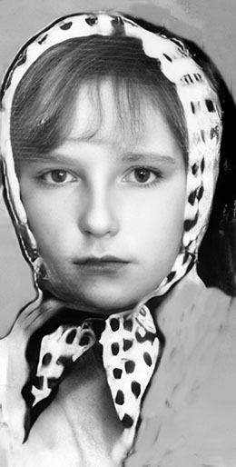 Сестра Ира, 1967 год. |
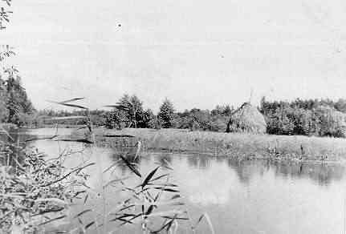 На речке Поль в 1968-1969 году. |
|
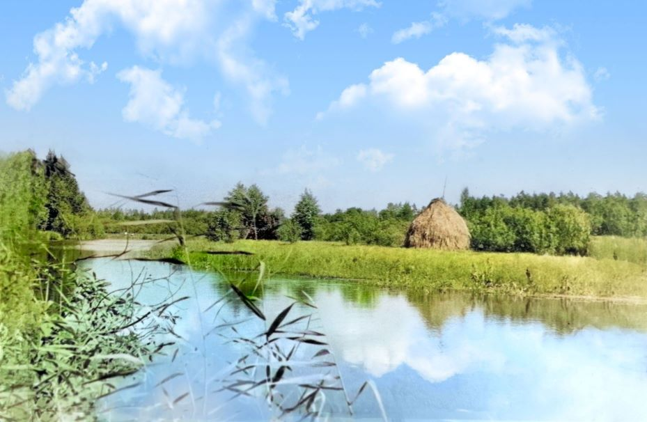 Раскраска фото 2024 года. |
Другие фото 1968-1969 года
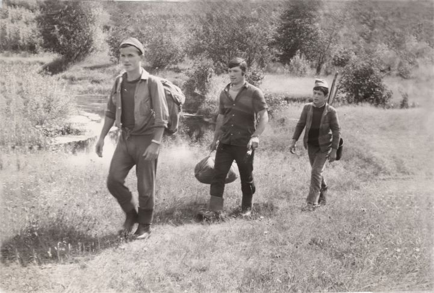
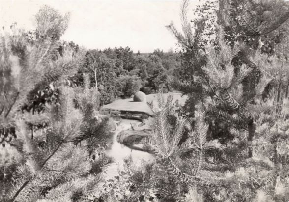
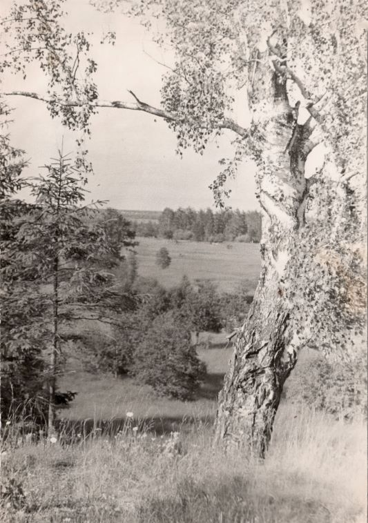
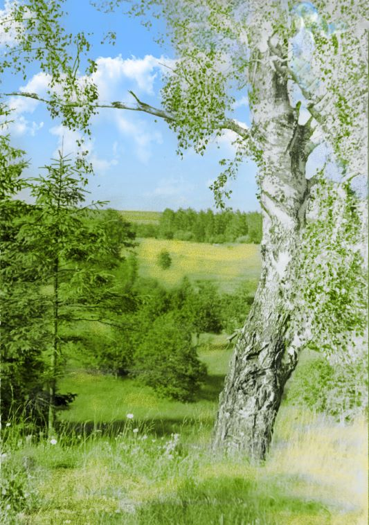
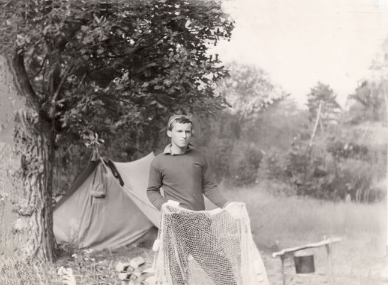
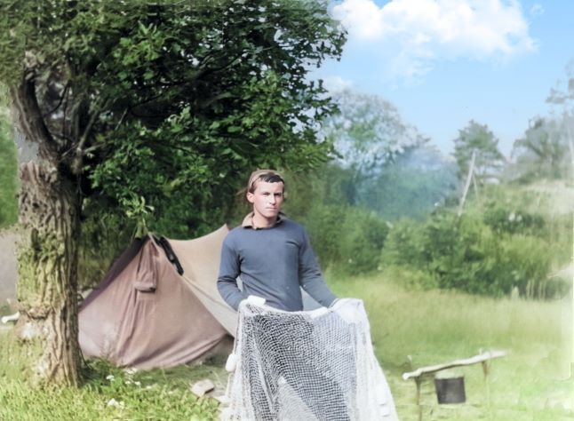
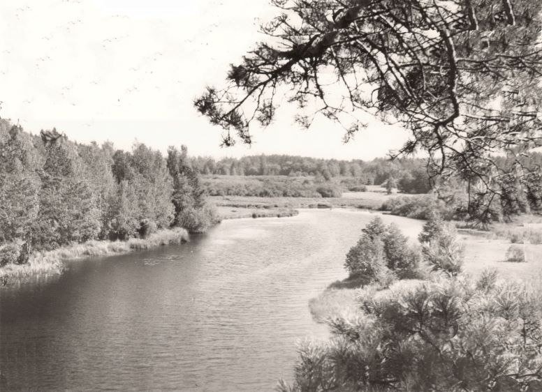
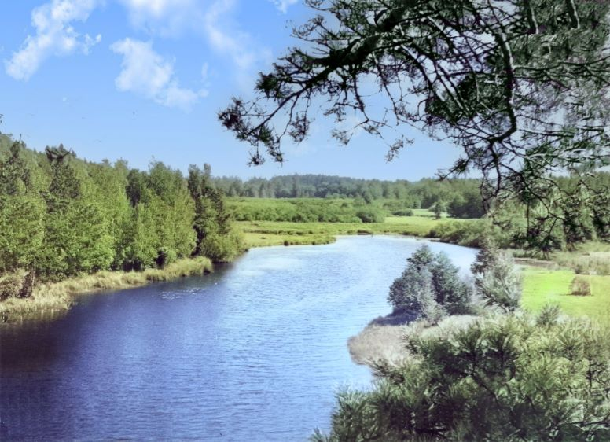
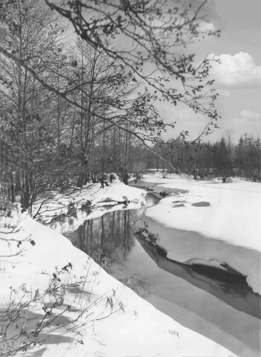
... В беспечной юности я знал
Одни дремучие дубравы,
Ручьи, пещеры наших скал
Да дикой бедности забавы.
Но жить в отрадной тишине
Дано не долго было мне...
Александр Сергеевич Пушкин.
РУСЛАН И ЛЮДМИЛА